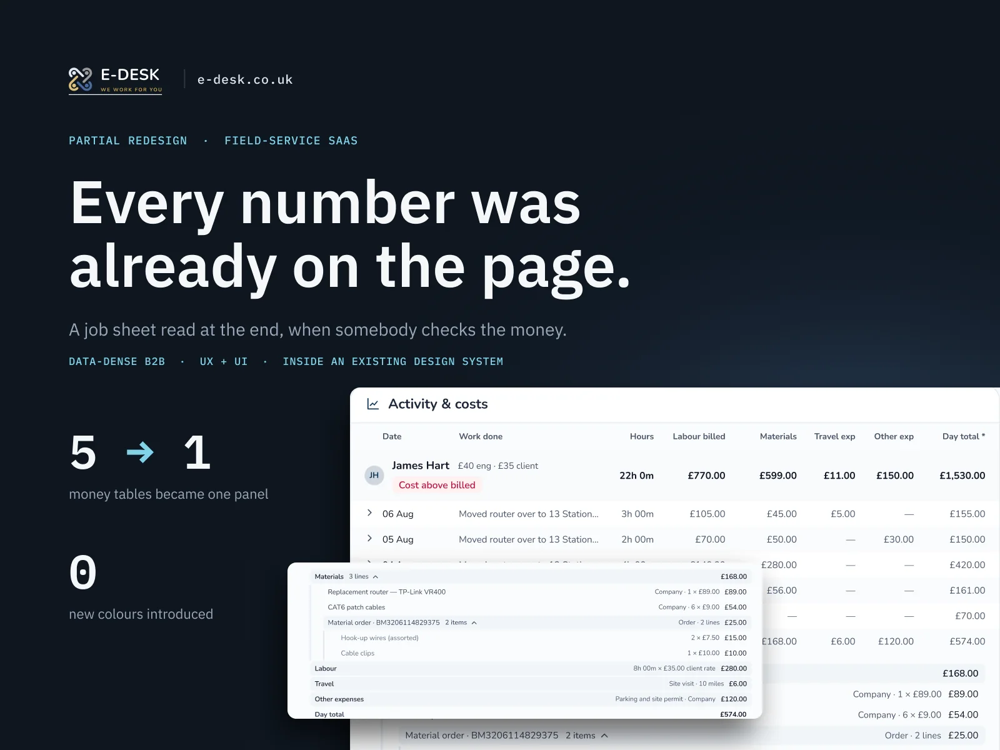
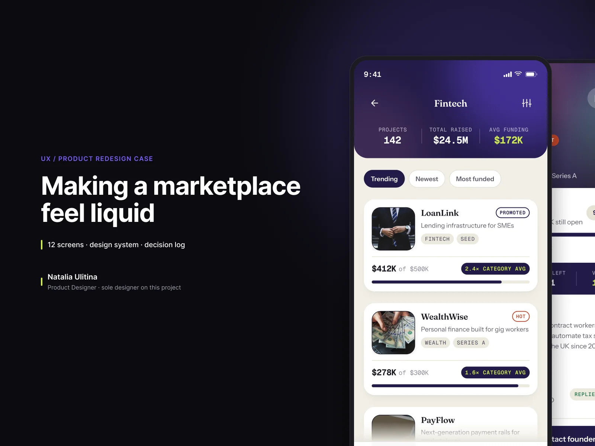
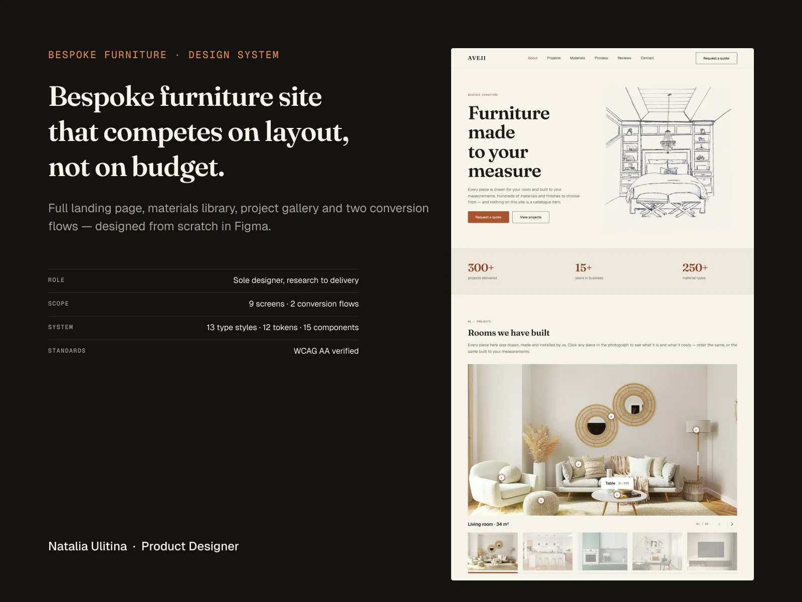
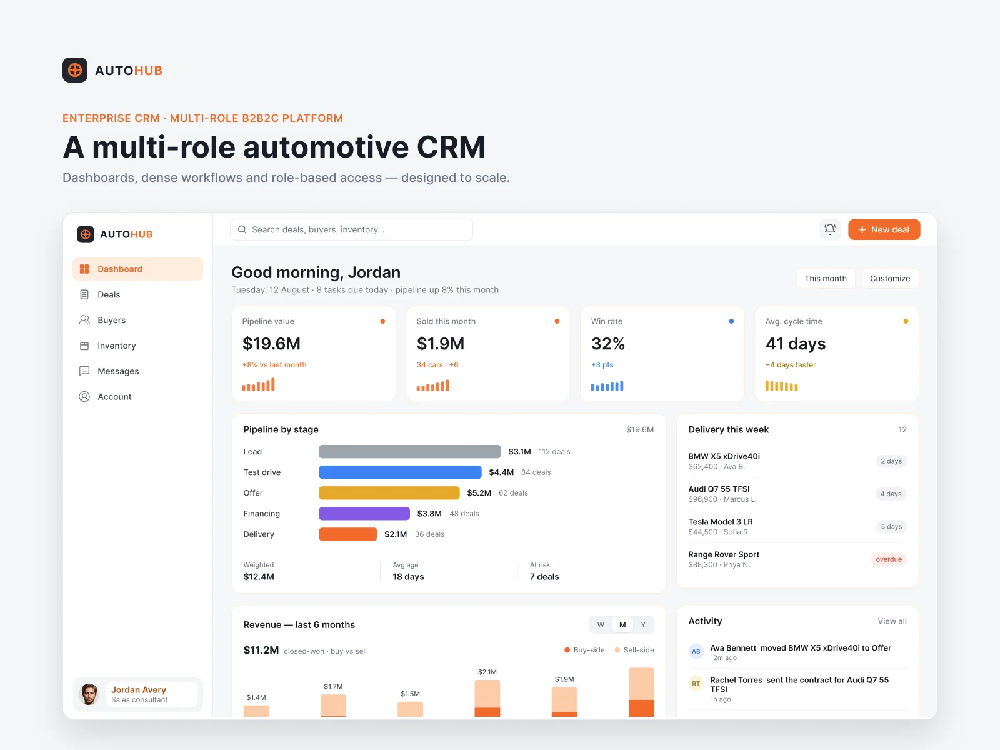
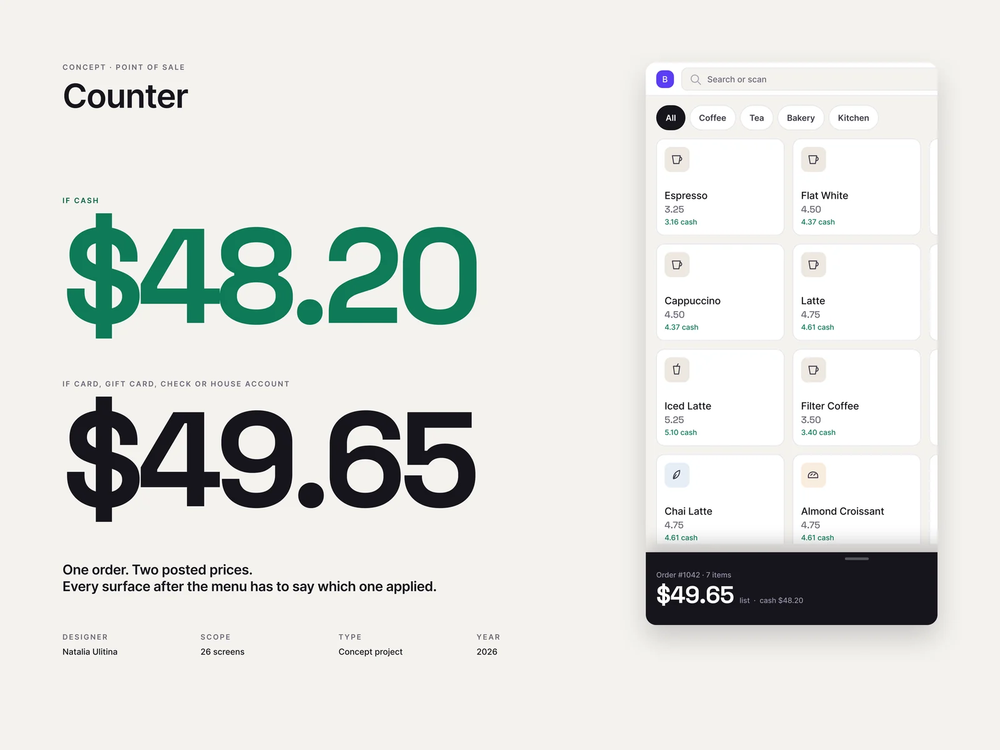

Nothing gives me more joy than turning chaos into a beautiful, logical system.
Dense data, regulated flows, five people in one deal: the harder the product, the more I enjoy it. I design SaaS, fintech and marketplace products, and I'll care about yours the same way.
Selected work
Five products, five kinds of chaos.
Different industries, different problems, one way of working. Each case shows the decisions, not just the screens.

Every number was already on the page: a job sheet redesigned inside the client's own design system, five money tables into one panel.Read the case →Investment app02 · Fintech · Shipped
Making an investor–founder marketplace feel liquid: onboarding, discovery and a paywall that fires at the right moment.Read the case →AVEJI03 · Furniture · Client site
A bespoke furniture site that competes on layout, not on budget: it starts with a pencil drawing, not a stock photo.Read the case →AutoHub04 · Dealership CRM · Desktop + mobile
One multi-role dealership CRM, designed twice: a dense desktop dashboard, then re-authored for a phone so a deal can move from the lot, not the office.Read the case →Counter05 · Point of sale · Concept
One order, two posted prices: a café register where the ticket, the receipt and the owner's report all say which price applied.Read the case →More work
About
I love my job, and part of the reason is that it's hard.
Products usually arrive as chaos: too many roles, a regulation nobody explained, fifty states nobody drew. Arranging that into something beautiful and logical gives me pure joy, and it's the moment I work towards on every project.
Then comes the part nobody asks for: the error message that says what actually went wrong, the empty screen that tells you what to do next, the text still readable when your eyes are tired.
And then there's the joy that comes later: seeing a client relieved because their product finally makes sense, and watching it grow fast once it does. I enjoy their success as much as the work itself.
Trained in UX/UI design at Yandex Practicum, and at home in cross-cultural teams around the world.
How I work
Beautiful. Logical. Comfortable.
Three things I check on every screen, in this order, and the reason the chaos ends up as a system.
Beautiful
People trust what looks cared for.
Visual quality isn't decoration. It's the first signal that someone paid attention, and it earns the patience a complex product needs.
Seen in AVEJI →Logical
Where am I, what can I do, what happens next?
Every screen answers those three questions. I map the flows, roles and states before I draw a single pixel, so nothing is left for a developer to guess.
Seen in AutoHub →Comfortable
Complex shouldn't feel complex.
Readable, accessible, forgiving of mistakes, and every state designed, not just the happy one. The error, the empty screen and the slow connection get the same care.
Seen in E-DESK →What clients say
Three clients said they'd work with me again. One already has.
“She doesn't just design visually — she truly thinks about how users interact with the product and how the platform should work in real life.”
“She also respected the business model and adjusted the designs to match monetization and MVP goals perfectly.”
“Happy with the cooperation, highly recommended.”
“Natalia delivered exactly what was promised with great attention to detail … I would definitely work with her again in the future!”